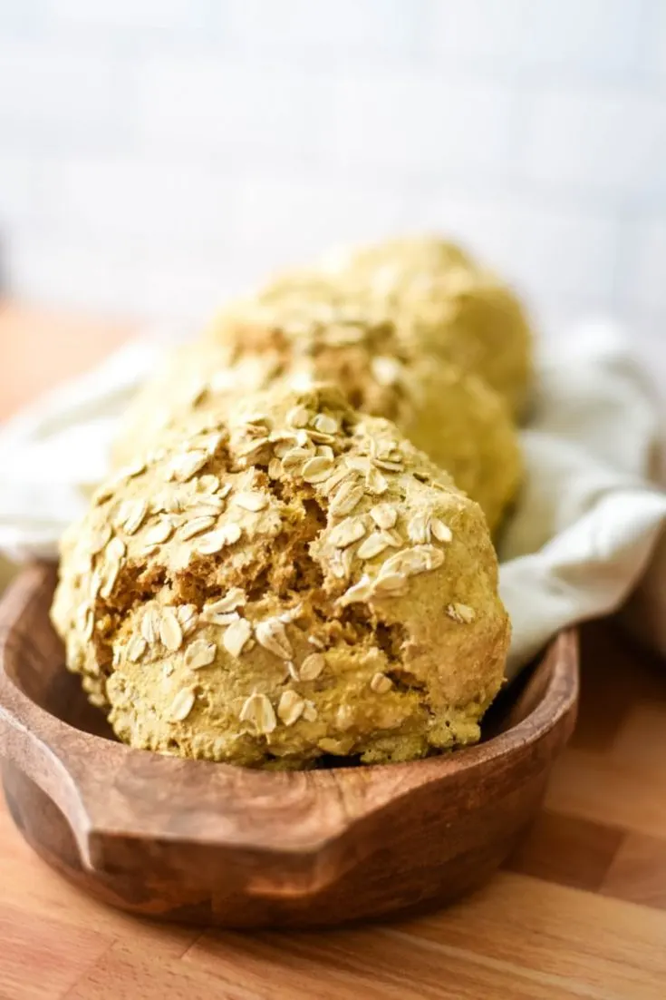

Hearty And Satisfying Viking Bread

This viking bread is a hearty and heavy bread perfect for serving with soups and stews. It's also really good warm from the oven and drizzled with honey!
This rustic bread recipe is perfect to serve with soups, stews, and any other meal that could use a great side of bread. This Viking Bread is the perfect accompaniment to Viking Grilled Lamb Kebabs! It is easy enough that kids can help you make it, and its quick enough to bake on any weeknight.
Ingredients
- 3 cups whole wheat flour
- 2 cups all purpose flour
- 1 cup old fashioned oats
- 1 teaspoon baking soda
- 1 teaspoon salt
- 2 cups water
Topping
Instructions
- Do not preheat the oven.
- In a large bowl, combine the whole wheat flour, all purpose flour, oats, baking soda and salt.
- Add the water and stir with a wooden spoon until it is as incorporated as you can get it.
- Knead the dough with your hands for a few minutes until you get the rest of the ingredints all the way mixed in.
- Divide the dough into 6 even balls of dough.
- Place the balls onto a bakign stone and sprinkle the remainng oats on top.
- Place the baking stone in the oven and turn the oven on to 375 F.
- Bake for 20-30 minutes, or until the tops are starting to turn golden brown.
- Pull the baking stone out of the oen and let it cool for a few minutes before you enjoy!
Return To Recipes